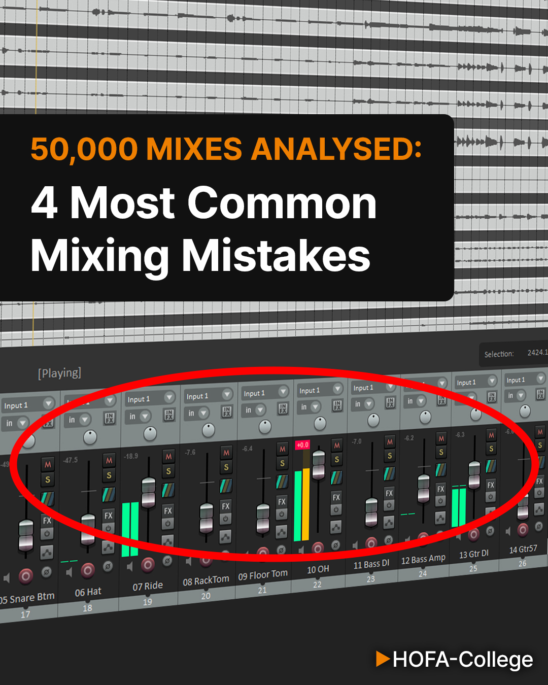
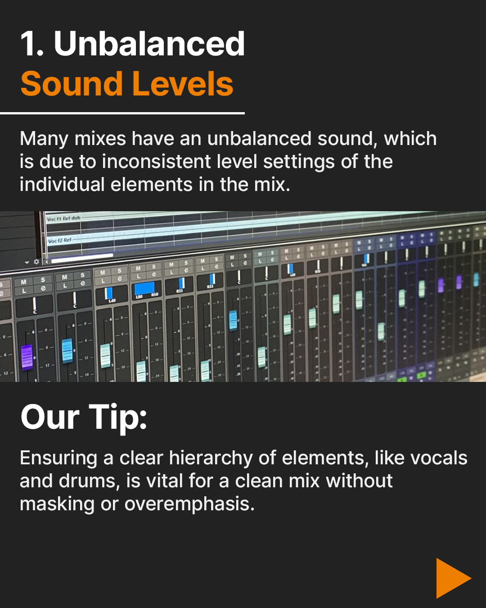
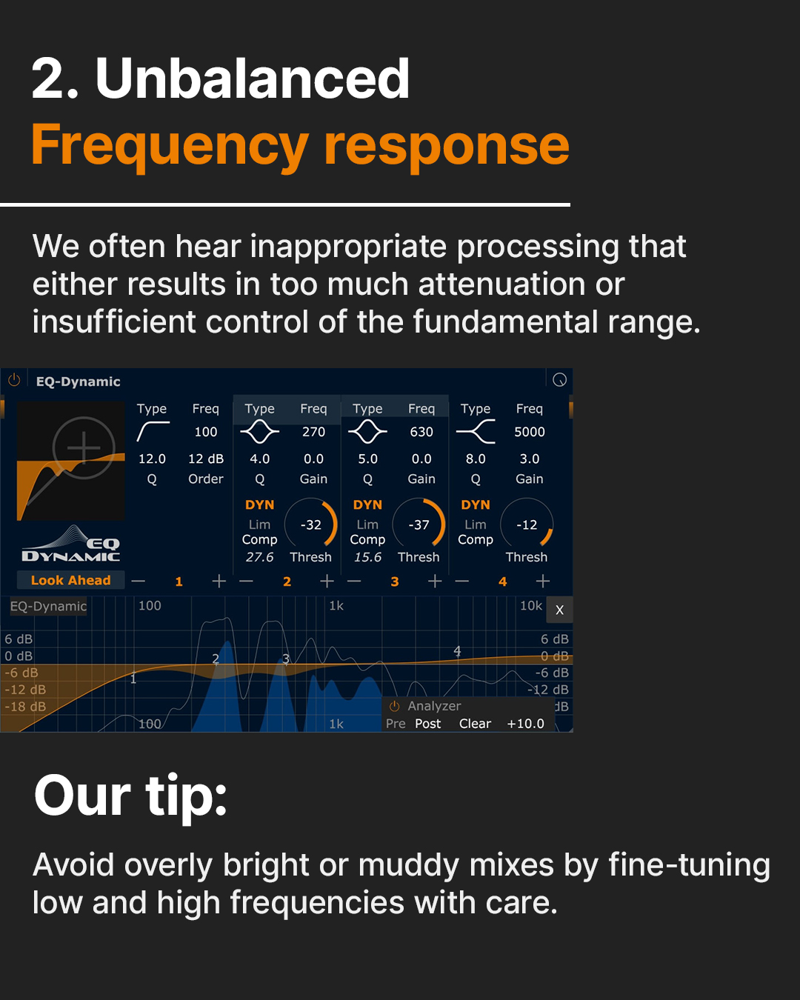
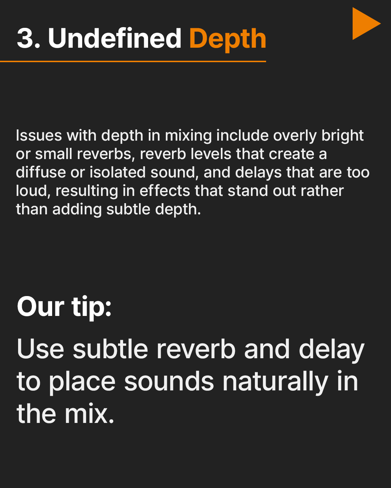
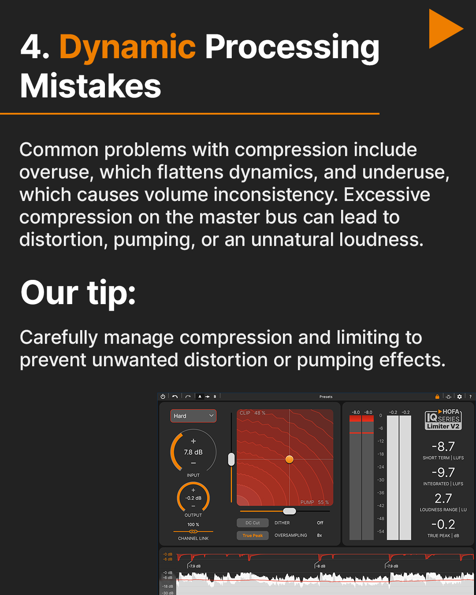
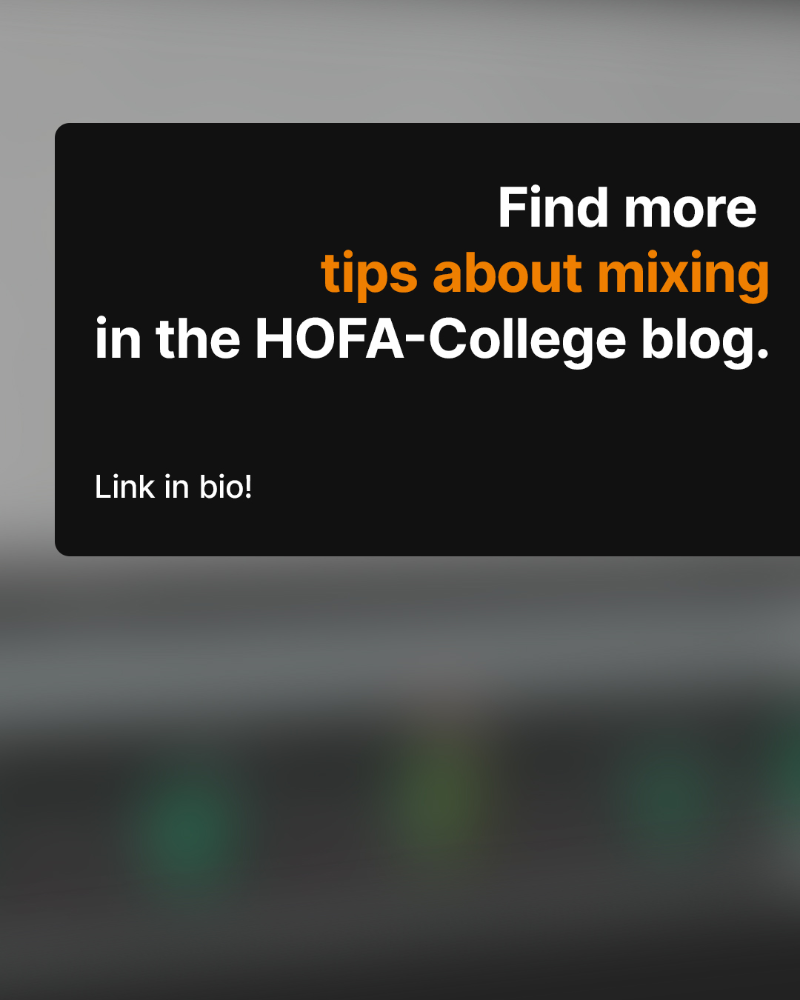
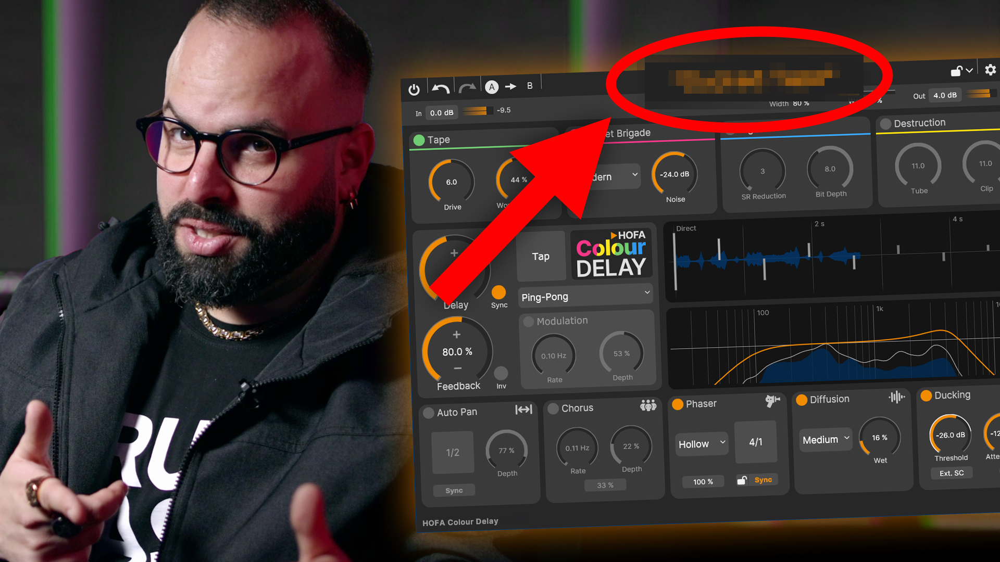
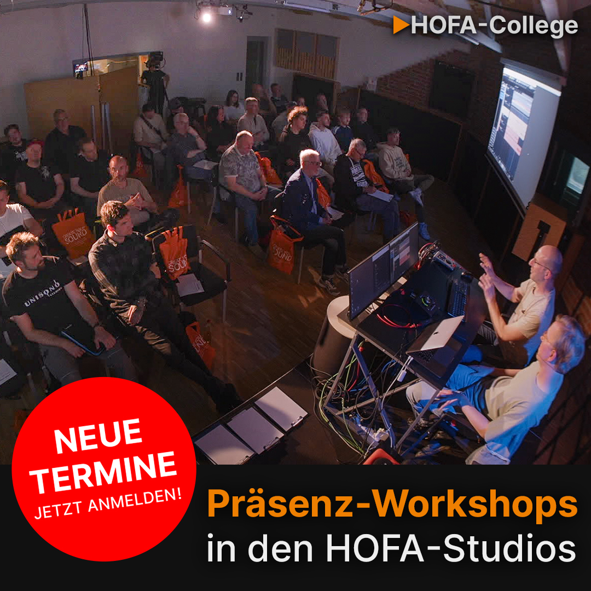

Social Media
Campaigning
Hier zeige ich, wie ich Kampagnen für Social Media konzipiere und gestalte. Der Fokus liegt auf hoher Interaktionsrate und einer klaren visuellen Sprache.
Hier links: Edukative Karussell-Posts, die komplexe Informationen in leicht verdauliche Slides herunterbrechen.
Instagram • Educational


Weiteres Beispiel






YouTube
Thumbnails
Bei YouTube entscheidet der erste Eindruck. Der Fokus bei diesen Thumbnails liegt auf einer maximalen Klickrate (CTR), starken Kontrasten und einer klaren visuellen Hierarchie, die auch auf kleinen Handy-Displays sofort verständlich ist.
Content Creation • CTR

Performance
Social Ads
Layouts, die konvertieren sollen. Diese Werbeanzeigen wurden speziell für Instagram- und Facebook-Kampagnen entwickelt. Sie kommunizieren den Mehrwert auf einen Blick und führen den Nutzer gezielt zum Call-to-Action.
Performance Marketing
